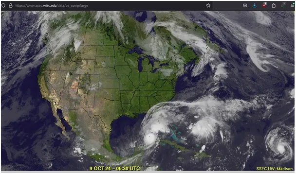
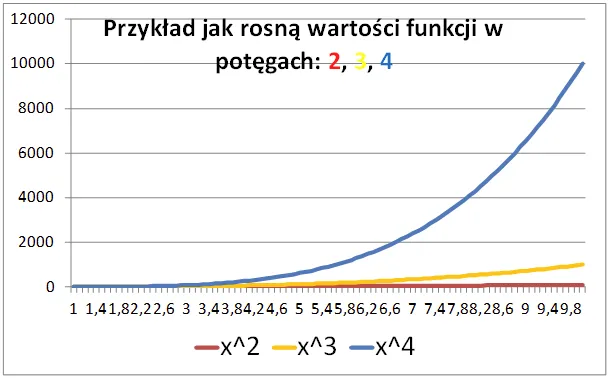
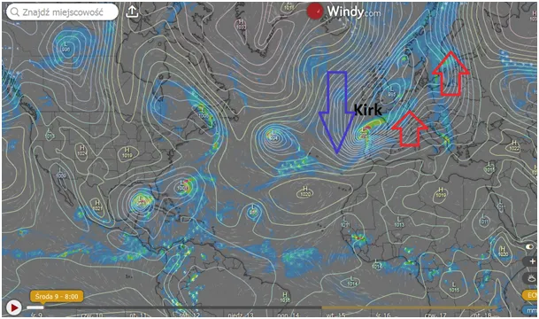
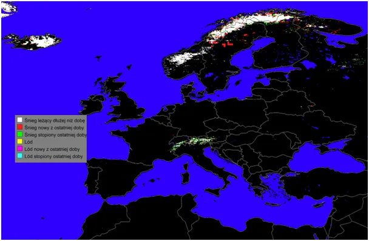

Jak Jožef Stefan i Ludwig Boltzmann uratowali świat przed carbofrustratami i dlaczego Indianie już zbierają chrust.
Gdy resztki po huraganie Kirk docierają do Europy na środkowym Atlantyku i nad Zatoką Meksykańską rodzą się kolejne trzy cyklony, w mediach głównego ścieku to koniec świata. Zimne prądy oceaniczne z północy w tym sezonie spowodowały spowolnienie ciepłego Prądu Zatokowego i koncentrację ciepłej wody oceanu na wysokości Florydy.
Jednym z ważniejszych mechanizmów w Kosmosie jest zasada, że im ciało jest cieplejsze, tym szybciej stygnie, bo moc promieniowania podczerwonego, zgodnie z prawem Stefana-Boltzmanna, rośnie aż do czwartej potęgi (I=σT^4) ze wzrostem temperatury.

Oznacza to, że dwa razy cieplejsze ciało emituje 16 razy więcej energii, jest to w fizyce rzadka zależność. Taki mechanizm gwarantuje nam, że nawet nieznaczny wzrost temperatury oceanu w okolicach równika powoduje drastyczny wzrost emisji ciepła w Kosmos oraz do dolnych warstw atmosfery (stratosfery). Nagrzane, wilgotne powietrze szybko się unosi i tworzy wir cyklonu, który przez swe "oko" zasysa zimne, nawet do -50 st .C, powietrze znad olbrzymich chmur cyklonu w dół, a ciepłe powietrze wysyła na zewnątrz wiru, aby przez skraplanie się pary oddało zabraną wcześniej w trakcie parowania energię i spadło w postaci deszczu. Identycznie jak to się dzieje w skraplaczach naszych lodówek. Tak oto błyskawicznie dochodzi do schłodzenia zbyt rozgrzanego akwenu zapewniając Ziemi stabilne warunki termiczne.

Wzrost temperatury oceanu następuje na skutek długoterminowych okresów z rzadkimi chmurami w pasie międzyzwrotnikowym Ziemi, a to zjawisko zależy od aktywności Słońca i natężenia promieniowania kosmicznego, a na te czynniki nie mamy wpływu żadnego. Głównym gazem cieplarnianym jest para wodna, ale jej nadmiar powoduje duże zachmurzenie i spadek temperatur oceanu, jest to drugi mechanizm ziemskiego termostatu. Zatem śpimy spokojnie, ale pamiętajmy, że Indianie już zbierają chrust, bo czytają moje felietony i wiedzą, że ocean wokół Europy i Ameryki na północy jest zimny.

Na ostatniej mapce zielone to topniejący śnieg ostatniej doby pod wpływem ciepła niesionego przez wschodnie skrzydło cyklonu. Czerwone to śnieg nowy, a białe to leżący dłużej niż dobę.
Paweł Klimczewski